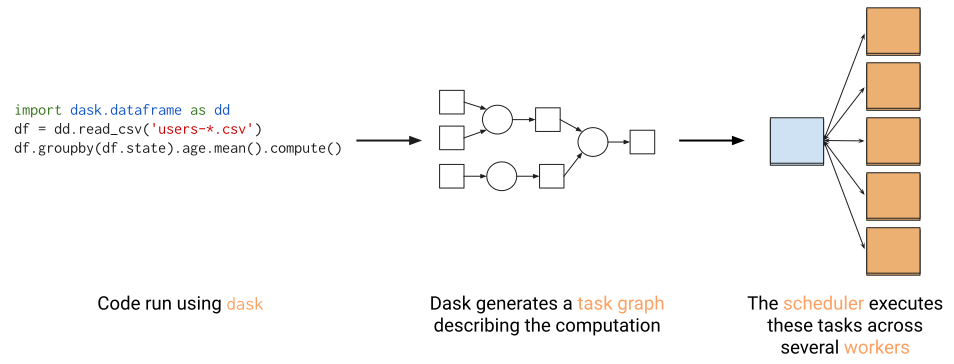
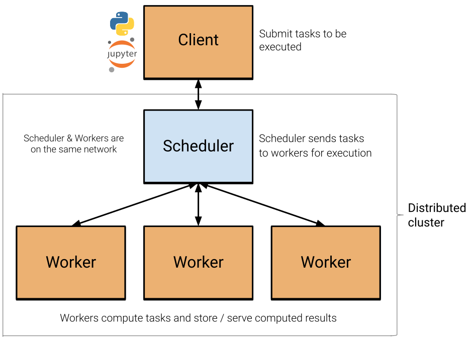
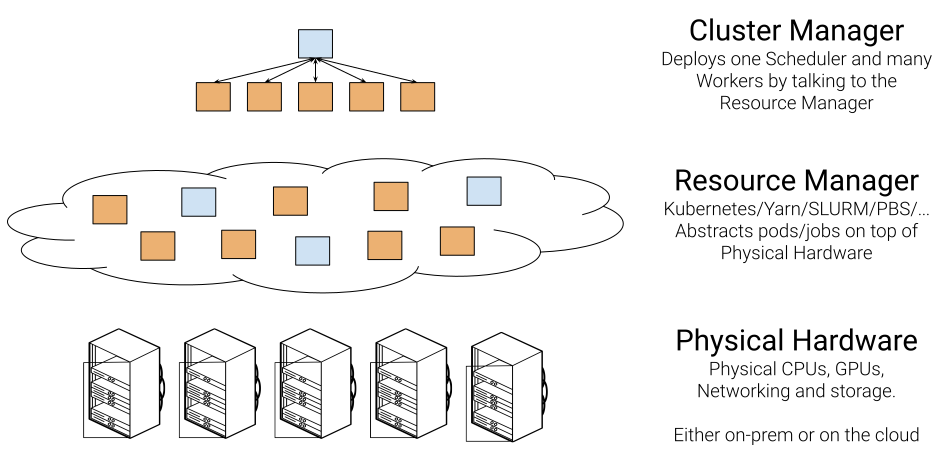
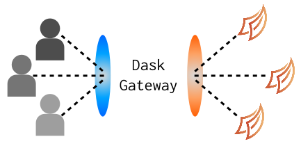
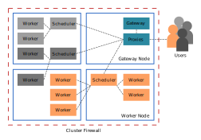
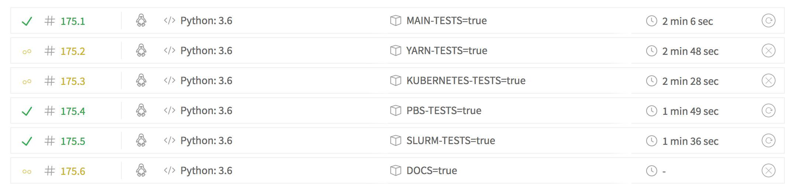

class: center, middle # Dask-Gateway # Dask clusters as a service <img src="../images/dask_icon.svg" width=15%> Jim Crist <i class="fab fa-twitter-square"></i> `jiminy_crist` // <i class="fab fa-github"></i> `jcrist` <hr width=40%> *Anaconda Inc.* --- class: center, middle # What is Dask? --- # Dask - A flexible parallel library for parallel computing - Provides a familiar API for writing scalable analytics using the PyData ecosystem - `dask.array` looks like `numpy` - `dask.dataframe` looks like `pandas` - `dask.ml` looks like `scikit-learn` ```python import pandas as pd import dask.dataframe as dd df = pd.read_csv('2015-01-01.csv') df = dd.read_csv('2015-*-*.csv') df.groupby(df.user_id).value.mean() df.groupby(df.user_id).value.mean().compute() ``` - Scales from a single machine to a large distributed cluster --- class: center, middle  --- class: center, middle  --- class: center, middle  --- # Cluster Manager - In charge of deploying of dask schedulers/workers on cluster backend - Many different implementations - [Kubernetes](https://kubernetes.dask.org) - [YARN](https://yarn.dask.org) - [HPC Job queues](https://jobqueue.dask.org) - [Cloud Providers (EC2, ...)](https://cloudprovider.dask.org) - ... - Standard interface: ```python # Scale to n workers cluster.scale(n) # Adaptively scale between min and max workers cluster.adapt(min, max) ``` --- # Cluster Manager - Example Example using [`dask-yarn`](http://yarn.dask.org/en/latest/) ```python # Create a cluster backed by YARN from dask_yarn import YarnCluster cluster = YarnCluster( environment='environment.tar.gz', worker_vcores=2, worker_memory="8GiB", ) # Scale to 2 workers cluster.scale(2) # Connect to the cluster from dask.distributed import Client client = Client(cluster) # Application code... import dask.dataframe as dd df = dd.read_parquet(...) ... ``` --- # Cluster Manager - Example Example using [`dask-yarn`](http://yarn.dask.org/en/latest/) ```python *# Create a cluster backed by YARN *from dask_yarn import YarnCluster *cluster = YarnCluster( * environment='environment.tar.gz', * worker_vcores=2, * worker_memory="8GiB", *) # Scale to 2 workers cluster.scale(2) # Connect to the cluster from dask.distributed import Client client = Client(cluster) # Application code... import dask.dataframe as dd df = dd.read_parquet(...) ... ``` --- # Cluster Manager - Example **Kubernetes**: [`dask-kubernetes`](https://kubernetes.dask.org) ```python >>> from dask_kubernetes import KubeCluster >>> cluster = KubeCluster(...) ``` **YARN**: [`dask-yarn`](https://yarn.dask.org) ```python >>> from dask_yarn import YarnCluster >>> cluster = YarnCluster(...) ``` **HPC Clusters**: [`dask-jobqueue`](https://jobqueue.dask.org) ```python >>> from dask_jobqueue import PBSCluster >>> cluster = PBSCluster(...) ``` --- # Status Quo - Pros - Deployment is part of user's code, no need for extra CLI tools. - Work from scripts, notebooks, applications, etc... - No need for extra infrastructure, plays well with deployment backends - Just python libraries - easy to install - Extensible design, anyone can make a backend --- # Status Quo - Cons - Requires domain-specific knowledge of backend - Difficult for new users - Users must have permissions and network access for cluster backend - May require users have excessive permissions, security risk - Client usually must be on same system as scheduler/workers - No central management - Must rely on backend for tracking user actions and resource usage - Hard to enforce good practices - Clusters are tied to lifetime of client - Restart your notebook, restart the cluster --- class: center, middle  --- # Dask-Gateway <span class="center">  </span> --- # Dask-Gateway - REST api for managing clusters - Proxy for client to scheduler traffic (TLS) - Proxy for dashboards (HTTP) - Flexible design - Configurable backend (Kubernetes, YARN, HPC, ...) - Configurable authentication (Kerberos, JupyterHub, ...) - Most actions done server-side (simple client, more complicated server) --- # Using Dask-Gateway ```python # Previous example using dask-yarn... # Create a cluster backed by YARN from dask_yarn import YarnCluster cluster = YarnCluster( environment='environment.tar.gz', worker_vcores=2, worker_memory="8GiB", ) # Scale to 2 workers cluster.scale(2) # Connect to the cluster from dask.distributed import Client client = Client(cluster) # Application code... import dask.dataframe as dd df = dd.read_parquet(...) ... ``` --- # Using Dask-Gateway ```python # Same example using dask-gateway # Create a cluster backed by dask-gateway from dask_gateway import GatewayCluster cluster = GatewayCluster( address="https://mygateway.address.com", worker_vcores=2, worker_memory="8GiB", ) # Scale to 2 workers cluster.scale(2) # Connect to the cluster from dask.distributed import Client client = Client(cluster) # Application code... import dask.dataframe as dd df = dd.read_parquet(...) ... ``` --- class: center, middle # Demo --- # Additional Features - User resource limits - Automatic shutdown of idle clusters - Strong interop with JupyterHub - ... --- class: center, middle # Internals - Highlights --- # Configuration - Need to pick a configuration format. - YAML? - JSON? - TOML? - ... --- # Configuration - Need to pick a configuration format. - ~~YAML?~~ - ~~JSON?~~ - ~~TOML?~~ - ... --- # Configuration - YAML has [weird edge cases](https://docs.saltstack.com/en/latest/topics/troubleshooting/yaml_idiosyncrasies.html) ```python >>> yaml.safe_load("1:2") 62 >>> yaml.safe_load("1: 2") {1: 2} >>> yaml.safe_load("99:00:00:00:00:00") 76982400000 >>> yaml.safe_load("ff:00:00:00:00:00") "ff:00:00:00:00:00" ``` - Static files aren't flexible to runtime configuration - Would need to write our own validation, type checking, etc... --- # Traitlets! - Declarative - Automatic validation - Configuration as code - Same config as Jupyter ecosystem (https://github.com/ipython/traitlets) --- # Traitlets - Example ```python from traitlets.config import Configurable from traitlets import Float class Rectangle(Configurable): width = Float( 1, min=0, help="The width of the rectangle in meters", config=True, ) height = Float( 1, min=0, help="The height of the rectangle in meters", config=True, ) def area(self): return self.width * self.height ``` --- # Traitlets - Example **Configuration** ```python # config.py c.Rectangle.width = 10 c.Rectangle.height = 25 ``` **Usage** ```python >>> r = Rectangle(config=c) >>> r.width 10 >>> r.height 25 >>> r.area() 250 ``` --- # Traitlets - Validation **Configuration** ```python # config.py c.Rectangle.width = 10 c.Rectangle.height = -1 # invalid value ``` **Usage** ```python >>> r = Rectangle(config=c) ... TraitError: The value of the 'height' trait of a Rectangle instance should not be less than 0, but a value of -1.0 was specified ``` --- # Traitlets - Custom logic ```python # config.py import sys # Support wider rectangles on windows: if sys.platform == "win32": c.Rectangle.width = 20 else: c.Rectangle.width = 10 c.Rectangle.height = 10 ``` --- # Configurable Backends - Wanted support for multiple backends - Kubernetes - YARN - HPC Job Queues - ... --- # Configurable Backends - Wanted support for multiple backends - Kubernetes - YARN - HPC Job Queues - ... - Solution: - Abstract backend-specifics out into a base class - Implement class for various backends - Make backend class configurable using [`traitlets.Type`](https://traitlets.readthedocs.io/en/stable/trait_types.html#traitlets.Type). --- # Cluster Manager Base Class - See [`dask_gateway_server.managers.base`](https://github.com/dask/dask-gateway/blob/master/dask-gateway-server/dask_gateway_server/managers/base.py) for full definition. ```python class ClusterManager(LoggingConfigurable): async def start_cluster(self): """Start a new cluster.""" async def cluster_status(self, cluster_state): """Check the status of a cluster.""" async def stop_cluster(self, cluster_state): """Stop the cluster.""" async def start_worker(self, worker_name, cluster_state): """Start a new worker.""" async def worker_status(self, worker_name, worker_state, cluster_state): """Check the status of a worker.""" async def stop_worker(self, worker_name, worker_state, cluster_state): """Remove a worker.""" ``` --- # Cluster Manager - Configuration ```python # Use the Kubernetes cluster manager c.DaskGateway.cluster_manager_class = "dask_gateway_server.managers.kubernetes.KubeClusterManager" # Specify which base image to use c.KubeClusterManager.image = "myuser/my-dask-gateway-image:latest" # Specify worker resources c.KubeClusterManager.worker_cores = 2 c.KubeClusterManager.worker_memory = "8 G" ... ``` --- # Scheduler Proxy - Dask uses raw TCP to communicate - Most proxies either: - Proxy HTTP (level 7), dispatching on the path in the HTTP request - Proxy TCP (level 4) to a static address - We need to proxy TLS (encrypted TCP) to *multiple* backends - Could include routing in each message, but would need to have proxy decrypt traffic (expensive) --- # Solution: Use SNI - SNI (Server Name Indication) > "an extension to the Transport Layer Security (TLS) computer networking protocol by which a client indicates which hostname it is attempting to connect to at the start of the handshaking process." ([Wikipedia](https://en.wikipedia.org/wiki/Server_Name_Indication)) - Allows routing TLS *encrypted* traffic based on an *unencrypted* field in handshake --- # Scheduler Proxy - On each connection: - Extract handshake message, extract SNI - Check SNI, rejecting clients with invalid SNIs - Connect to backend for specified SNI - Replay extracted handshake to backend - Copy bytes between sockets until connection closes (fast!) --- # Scheduler Proxy - Written in [Go](https://golang.org/) - Needed some low-level bytes handling - Good support for handling many clients - Stdlib had features that made this easier to write (~1000 lines total) - Also wanted an excuse to write some Go --- # Scheduler Proxy - Bundled with the `dask-gateway-server` wheel: - Wanted an easy install - Added as "package-data" ([setuptools docs](https://setuptools.readthedocs.io/en/latest/setuptools.html#including-data-files)) ```python # setup.py setup( ..., package_data={"dask_gateway_server": ["proxy/dask-gateway-proxy"]}, ... ) ``` --- # Testing - *Many* components to test - Cluster backends (Kubernetes, YARN, ...) - Server features - Client features - Want tests to be thorough, but also fast --- # Testing - Cluster backends - Generic test class for cluster-manager implementations - Thoroughly checks `ClusterManager` meets interface requirements - Dockerized setup for each backend (see [here](https://github.com/dask/dask-gateway/tree/master/continuous_integration)). - Tests are only run if they're needed, using [conditional builds](https://docs.travis-ci.com/user/conditional-builds-stages-jobs/)  --- # Testing - main application - Everything (mostly) run in one process - `InProcessClusterManager` implementation - Easy injection of failures (e.g. kill worker/scheduler/task) - Lightweight, fast startup/shutdown - Can use PDB to inspect *global* (usually distributed) state - Use [`pytest-asyncio`](https://github.com/pytest-dev/pytest-asyncio/) for `async` test support --- class: center, middle # Conclusion --- # Dask-Gateway - **Centrally Managed** - Admins do the heavy lifting, users get easy cluster access. - **Secure by default** - Automatic TLS everywhere, no elevated user permissions. - **Flexible** - Configurable backends, authentication, etc... - **Robust to Failure** - Can be restarted or failover without losing existing clusters. --- # Dask-Gateway - Designed with *institutional* users/teams in mind - Previous deployment options still quite useful, and may be preferred for individuals and small teams. --- # Resources - Documentation: https://gateway.dask.org/ - [User Guide](https://gateway.dask.org/usage.html) - [Install on Kubernetes](https://gateway.dask.org/install-kube.html) - [Install on Hadoop/YARN](https://gateway.dask.org/install-hadoop.html) - GitHub: https://github.com/dask/dask-gateway/ - Dask Website: https://dask.org/ --- class: center, middle # Questions? <hr width=50%> - Documentation: https://gateway.dask.org/ - GitHub: https://github.com/dask/dask-gateway/